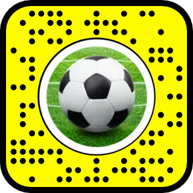
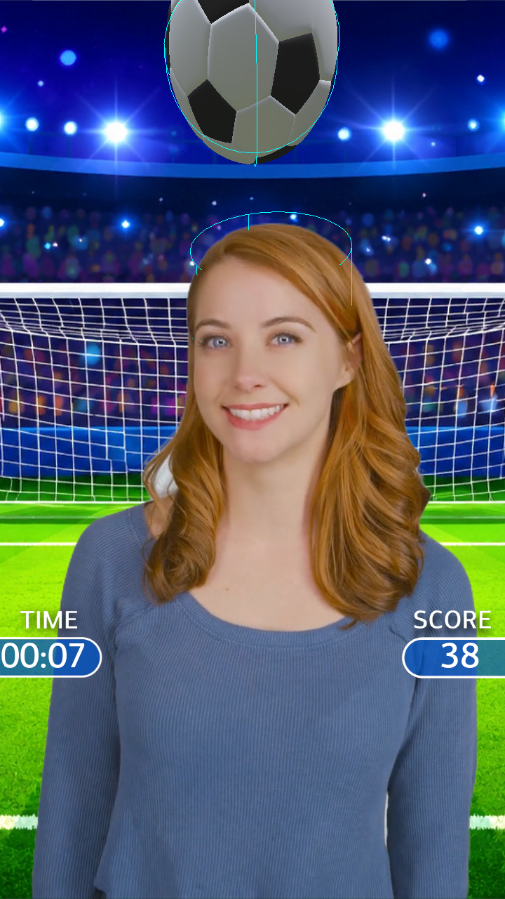
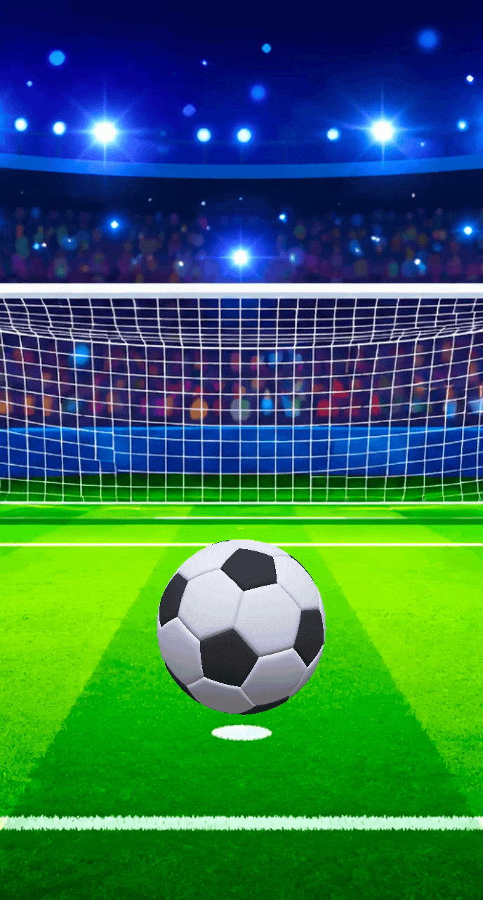
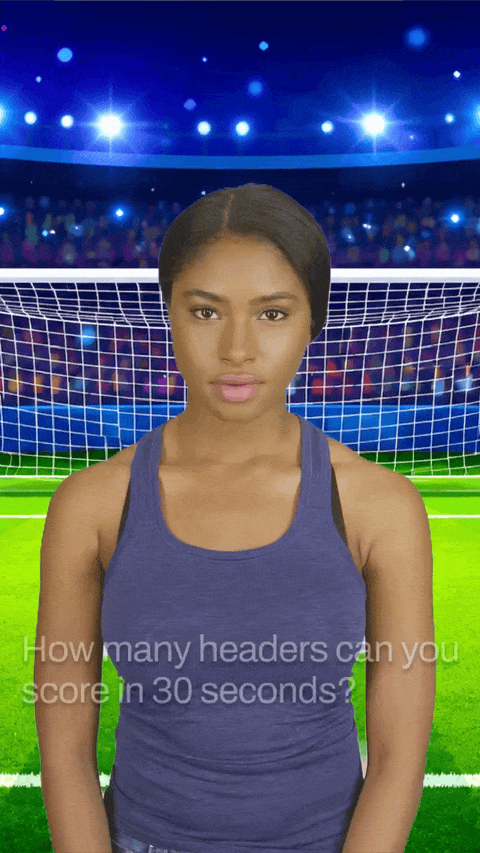

Game Mechanics
Controls the core gameplay loop, including ball spawning, scoring, timer logic, collision detection, difficulty scaling, personal record saving, and end-game routing.
Snapchat Lens

Scan with Snapchat

The Lens brings the traditional head juggling mechanic into a fast AR game: A ball spawns over the player’s head, and each hit grants a point until time runs out.
I owned the full production pipeline for this experience, from modeling and texturing the 3D assets to building the Lens Studio implementation, developing the core systems, and testing the final interaction.
The game is organized through a simple event system that moves the experience from landing, countdown, active gameplay, game over, and replay. Each stage manages what is visible, active, or reset, keeping the Lens stable and easy to restart. Independent controllers also handle the score system, timer, countdown, camera switching, and animations.

The game mechanics are built around ball, head, and floor colliders using Lens Studio physics. When gameplay starts, the system spawns a ball and tracks each valid hit with the head collider as a point. A hit threshold prevents accidental scoring when the ball is resting on the user’s head, while floor collisions respawn the ball so the game keeps moving until the timer ends. The head collider follows the user’s head and gradually increases its tilt influence every three hits, making the game approachable at first and more challenging as the score increases.

I built a visual feedback system to make the ball feel less rigid and more satisfying to hit. Each impact triggers squash, stretch, and spin effects that react to the strength of the collision, so stronger hits create more noticeable animation and make the bounce feel more physical.

Technical Build
Behind the experience, I built a modular set of Lens Studio scripts that made the game easy to customize, test, and expand. Each script handles a specific part of the experience.
Controls the core gameplay loop, including ball spawning, scoring, timer logic, collision detection, difficulty scaling, personal record saving, and end-game routing.
Handles the full game flow, moving the experience from landing to countdown, active gameplay, win/lose results, replay, and camera-switch recovery.
Animates the 3, 2, 1 countdown with timed fade, scale, and opacity transitions before starting active gameplay.
Adds physical feedback to the ball through impact-based spin, squash/stretch, recovery easing, and collision filtering with the head collider.
Manages score, timer, CTA, final record display, landing transitions, capture-safe states, and full UI reset behavior.
Handles front and rear camera switching, pausing gameplay systems on rear camera, and restoring the experience cleanly when returning to front camera.
Final Result
The final Lens became a quick soccer challenge built around one simple idea: try to break the record in 30 seconds. After a few feedback rounds, we tightened the pacing, cleaned up the UI, and made the ball feel more fun to hit. The result is simple, playful, and easy to replay.
Scan with Snapchat
